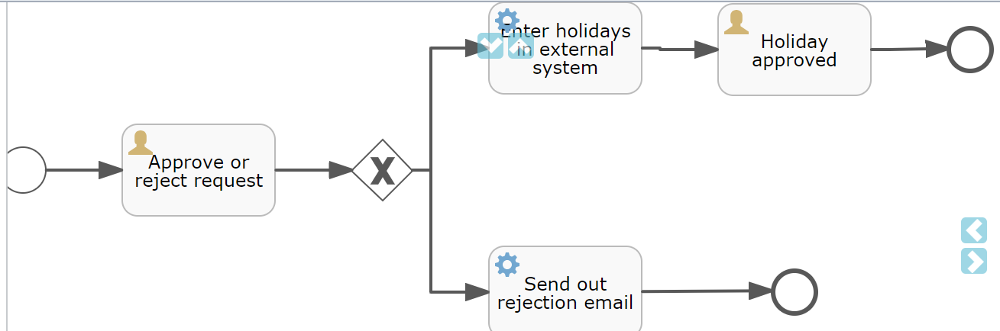

MyBatis-plus
https://baomidou.com/
flowable流程引擎
https://github.com/AbhamsterBall/mybatis-learning-projects
## flowable流程引擎
### 快速开始
```
ProcessEngineConfiguration cfg = new StandaloneProcessEngineConfiguration()
.setJdbcUrl("jdbc:h2:mem:flowable;DB_CLOSE_DELAY=-1")
.setJdbcUsername("sa")
.setJdbcPassword("")
.setJdbcDriver("org.h2.Driver")
.setDatabaseSchemaUpdate(ProcessEngineConfiguration.DB_SCHEMA_UPDATE_TRUE);
ProcessEngine processEngine = cfg.buildProcessEngine();
```
### 对xml的应用
- modeler可以导入xml文件
> 例如
```
```
可以转化为：
